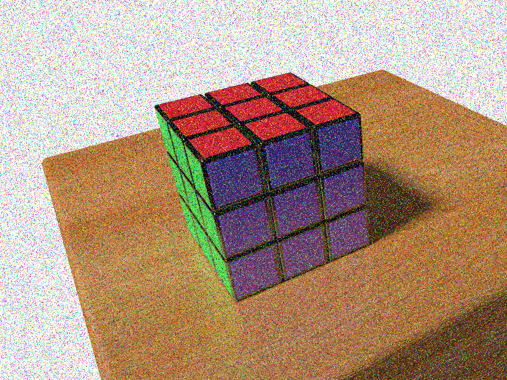

Composition du groupe : - Vincent COMMIN - Louis LEENART
Ce second TP de Computer Vision a pour but de nous faire appliquer les différents algorithmes de filtrage dans le but de restaurer une image bruitée. Plus précisément, nous étudierons une image contenant du bruit impulsionnel (dit bruit poivre et sel), et du bruit blanc gaussien.
L’objectif de cet exercice est de retirer le bruit impulsionnel de cette image : 
|
|
|
|---|---|---|
| image floutée 1 fois | image floutée 2 fois | image floutée 6 fois |
Après application du filtre moyenneur plusieurs fois sur l’image, on constate que celle-ci ne tend pas vers une image amélioré. Non-seulement l’image n’est pas bien débruitée mais celle-ci devient de plus en plus floue. On perd donc toutes les informations liées au contour.
| image floutée 1 fois par un filtre 5x5 | image floutée 1 fois par un filtre 7x7 |
On remarque que même en changeant la taille du filtre, le résultat reste le même, à savoir : flou tout en diluant le bruit dans l’image.
 |
|
|
|---|---|---|
| image avec filtre gaussien 3x3 | image avec filtre gaussien 5x5 | image avec filtre gaussien 7x7 |
Le filtre gaussien applique un flou tout en permettant mieux de garder les contours. On constate donc qu’il n’y a pas de grande différences entre les images filtrées avec des filtres de taille différente et l’image de base. Ceci est dû au type de bruit, chaque pixel bruité est considéré comme une bordure et est donc gardé par le filtre. Comparé au filtre moyenneur, les contours sont mieux conservé mais le bruit l’est aussi.
 |
 |
|
|---|---|---|
| image avec filtre bilateral appliqué 1 fois | image avec filtre bilateral appliqué 2 fois | image avec filtre bilateral appliqué 3 fois |
On constate que le filtre bilatéral retire plus de bruit mais accentue le flou (plus que le filtre moyenneur et gaussien). On remarque que les parties les plus débruités sont la table et le Rubik’s cube. Le bruit sur le fond blanc est mélangé avec celui-ci.
Le filtre bilatéral permet de réduire le bruit faible tout en gardant les contours. Etant donné la nature du bruit (poivre et sel) il n’est pas très adéquat.
| image avec filtre médian de taille 3 | image avec filtre médian de taille 5 | image avec filtre médian de taille 5 puis de taille 3 |
On constate que le filtre médian est le filtre à utiliser pour éliminer le bruit poivre et sel. De plus, il permet de garder les contours épais.
| histogramme de l’image sans masque | histogramme de l’image avec le masque par croissance de germe | histogramme de l’image avec le masque du seuil et de l’érosion |
| masque obtenue par croissance de germe sur un pixel blanc | masque obtenue par seuillage des pixels blancs et érosion en rectangle de 3x3 |
On constate que le masque calculé à partir du seuil et de l’érosion élimine plus de pixels blancs que le masque calculé à partir de la croissance de germe. Le pique toujours présent en 255 est du aux pixels de bruits qui sont présents sur la table et sur le Rubik’s cube.
| filtre médian 3x3 opencv | filtre médian 5x5 opencv | filtre médian perso en 3x3 | histogramme filtre médian perso en 3x3 |
On constate que le filtre médian personnel conserve mieux les contours tout en éliminant mieux le bruit impulsionnel.
Description de l’algorithme utilisé :
fonction mediumFilter(src, dst, diametre, masque):
// Note: avec diametre impair
- Copie des bords de src vers dst sur une largeur de diametre / 2
- Pour chaque pixel (x, y) de src:
- Si compris dans le masque (masque.at(x, y) == 1)
- radius = diametre / 2
- initialise stock[3][] // liste de 3 listes
- Pour i, j tel que (-radius <= i <= radius et -radius <= j <= radius)
- Pour chaque channel c
- Si (la valeur pixel est blanc) OU (la valeur du pixel pour le channel c != 255 et != 0)
- Ajouter la valeur du pixel pour le channel c dans stock[c]
- Fin Si
- Fin Pour
- Fin Pour
- Pour chaque channel c
- calculer v le médian de stock[c]
- appliquer v à dst.at(x, y) pour le channel c
- Fin Pour
- Sinon
- dst.at(x, y) = src.at(x, y)
- Fin Si
- Fin Pour
- Fin fonction| Nombre d’itération de filtre médian | Result | Histogramme associé |
|---|---|---|
| 0 | ||
| 1 |  |
|
| 2 | ||
| 3 |
Après plusieurs passes du filtre médian 3x3 sur l’image bruitée, on remarque que le résultat final ne semble pas comporter de bruit, contrairement au résultat d’une seule itération. En comparant l’histogramme du résultat après 3 passes de filtre médian par rapport à l’algorithme personnel de filtre médian, on remarque que le pic en 255 est encore présent (bruit sur la table et sur le rubik’s cube) tandis que ce pic est absent pour l’algo perso. On note que l’histogramme utilise un marque pour le fond de l’image.
Image d’origine avec bruit blanc gaussien : 
 |
|
|---|---|
| filtre moyenneur | filtre gaussien |
| filtre bilatéral | filtre médian |
On constate que le filtre gaussien n’a aucun effet sur l’image. Le filtre moyenneur quasiment pas non plus. Seul le filtre médian et le filtre bilateral ont un effet sur l’image. Le filtre médian homogénéise un peu plus l’image mais on garde encore un peu de bruit. Le filtre bilatéral est le mieux pour palier le bruit blanc gaussien mais rend l’image floue.
Le meilleure technique serait sans doute d’utiliser plusieurs filtres les uns après les autres.